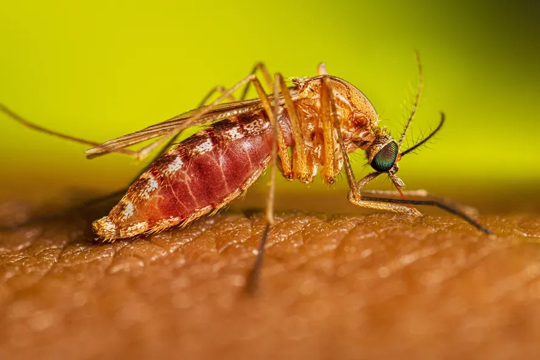

Febre oropouche: o que é, sintomas, causa e tratamento
A febre oropouche é uma virose que pode causar sintomas parecidos com a dengue, como febre e calafrios, dor no corpo e/ou atrás dos olhos, náusea ou sensação de mal-estar generalizado.
Esta virose é transmitida principalmente pela picada do mosquito Culicoides paraensis, conhecido popularmente como maruim, depois de ser infectado pelo vírus ao se alimentar do sangue de pessoas doentes.
Em caso de suspeita de febre oropouche, é recomendado consultar um infectologista ou clínico geral. O tratamento normalmente é feito apenas com medicamentos para aliviar os sintomas, como a dor ou febre.

Sintomas de febre oropouche
Os principais sintomas de febre oropouche são:
- Febre e calafrios;
- Dor de cabeça e atrás dos olhos;
- Sensação de mal-estar generalizado;
- Náusea e/ou vômitos;
- Dor muscular e nas articulações;
- Vermelhidão na pele e/ou sangramentos, embora raro.
Os sintomas da febre oropouche são parecidos com aqueles provocados pela dengue e tendem a se iniciar de 3 a 8 dias após a picada pelo mosquito infectado pelo vírus. Além disso, nos casos mais graves, podem também surgir complicações como sangramentos ou meningite
Embora a duração dos sintomas da febre oropouche varie de 2 a 7 dias, mesmo após o desaparecimento dos sintomas iniciais, é comum algumas pessoas ainda apresentarem episódios de sintomas leves, como febre e/ou dor de cabeça, por uma a duas semanas.
Como confirmar o diagnóstico
O diagnóstico de febre oropouche normalmente é feito pelo infectologista ou clínico geral levando em consideração os sintomas presentes e o resultado de exames de sangue específicos, que permitem identificar anticorpos produzidos pelo organismo contra o vírus.
No início da doença, o diagnóstico pode ser realizado a partir de testes que identificam a presença do vírus, como o PCR. Já nos casos mais avançados, pode ser realizada a pesquisa de anticorpos produzidos em resposta à infecção. Esses exames são feitos através da coleta de uma amostra de sangue.
Além disso, em caso de suspeita de complicações como meningite ou meningoencefalite, o médico também pode indicar a realização da punção lombar para confirmar a presença do vírus da febre oropouche no sistema nervoso.
O que causa a febre oropouche
A febre oropouche é causada pelo vírus Oropouche, que é transmitido principalmente pela picada dos mosquitos Culicoides paraensis, popularmente conhecido como maruim, e Culex quinquefasciatus, um tipo de pernilongo.
O mosquito normalmente se torna capaz de transmitir a febre oropouche depois é infectado pelo vírus ao se alimentar do sangue de uma alguém doente, principalmente caso a pessoa ainda esteja nos primeiros dias dos sintomas.

Como é feito o tratamento
O tratamento da febre oropouche é feito com medicamentos para aliviar os sintomas, como antieméticos, antitérmicos e/ou analgésicos. Embora não existam medicamentos ou vacinas específicos para esta virose, a maioria das pessoas se recupera naturalmente após 2 a 7 dias do início dos sintomas.
Embora complicações, como meningite asséptica ou meningoencefalite, sejam raras, especialmente nestes casos o tempo de recuperação tende a ser maior. Além disso, para algumas pessoas a recuperação completa dos sintomas pode demorar até 2 ou 3 semanas.
Prevenção da febre oropouche
Para prevenir a febre oropouche são recomendadas medidas como:
- Evitar lugares em que há muitos mosquitos, se possível;
- Eliminar recipientes ou objetos que podem acumular água, onde mosquito pode depositar ovos;
- Usar roupas que cubram a maior parte do corpo, como calças e blusas de manga comprida;
- Aplicar repelentes na pele, especialmente ao realizar atividades ao ar livre.
Embora não exista uma vacina para prevenir a febre oropouche, sua prevenção pode ser iniciada por meio de medidas simples que também são recomendadas para a evitar a dengue. Conheça as principais medidas para prevenção a dengue.